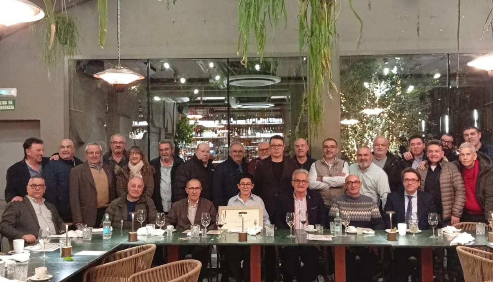
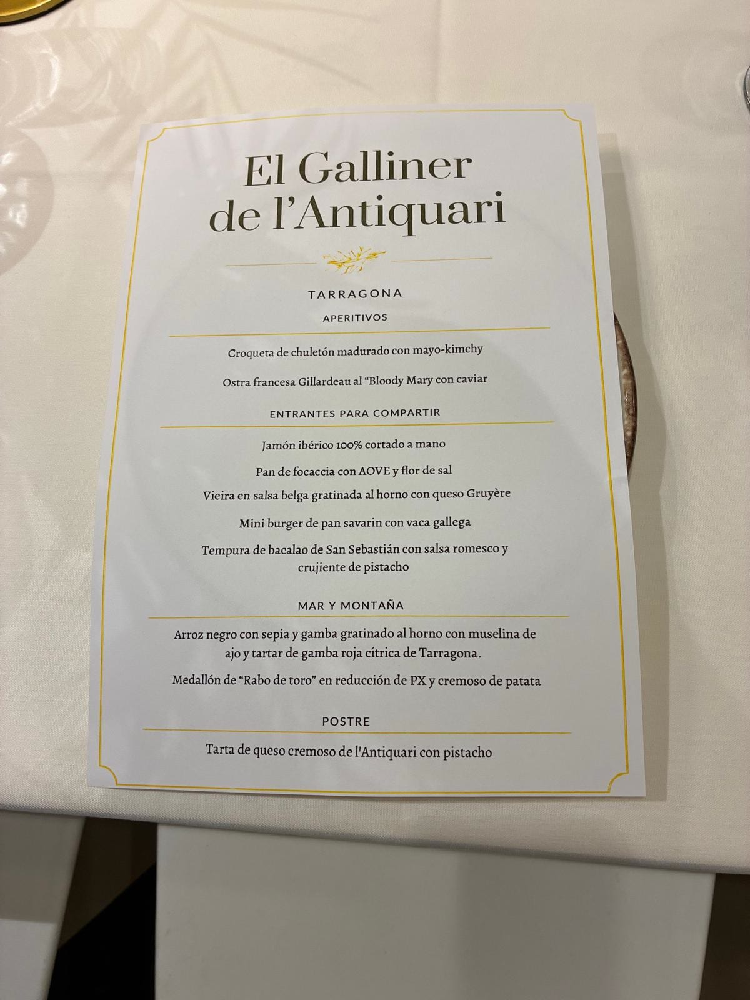
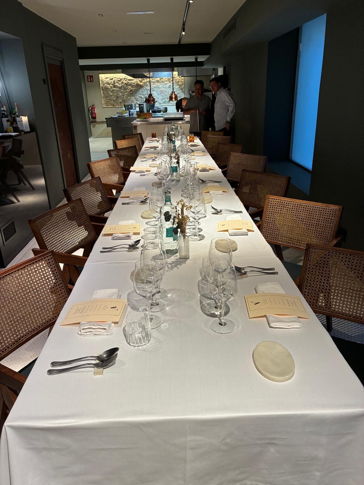
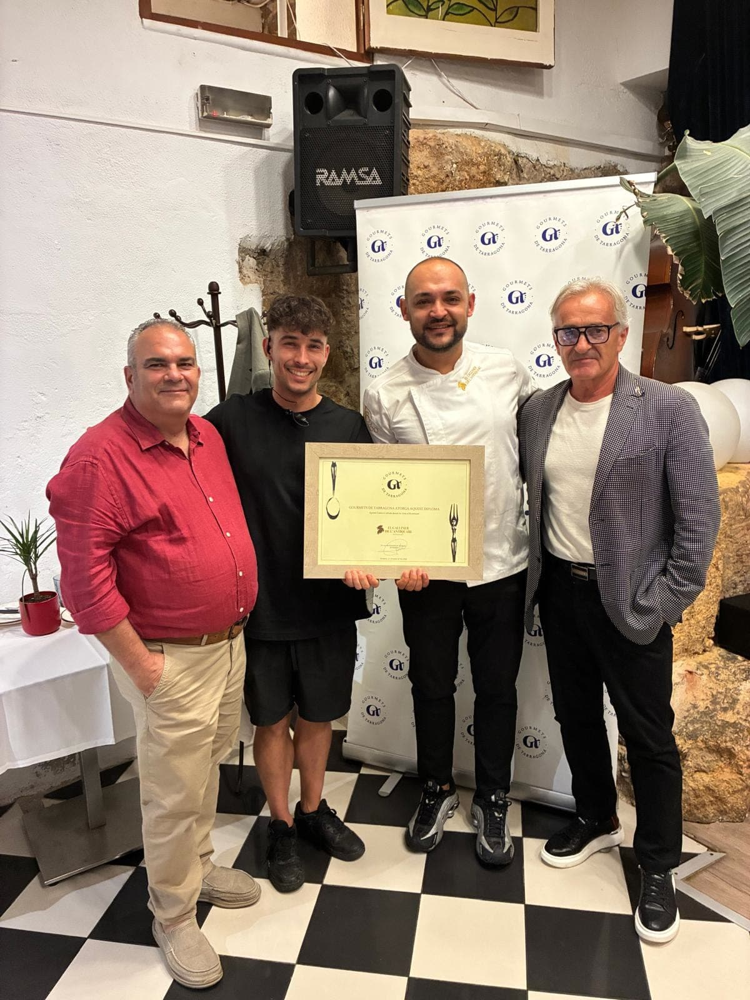

Treinta a la vez
Una pareja que entra en un restaurante lo pone a prueba muy poco. Dos platos, dos tiempos, una conversación. Casi cualquier cocina decente sale airosa de eso.
Nosotros llegamos treinta. A veces más, cuando hay invitados y algún invitado de honor. Y eso ya es otra cosa: es una prueba de esfuerzo. Treinta comensales obligan a la cocina a sacar el mismo plato treinta veces y a que el trigésimo llegue tan caliente como el primero. Obligan a la sala a servir, retirar y rellenar sin que se rompa el ritmo. Obligan al comedor a sostener treinta conversaciones a la vez sin que nadie tenga que levantar la voz.
No les pillamos por sorpresa. Avisamos con días de antelación del número exacto de comensales, invitados incluidos. Y precisamente por eso el resultado dice tanto: saben perfectamente lo que les viene encima.

Nosotros no pedimos
Aquí está la parte que casi nadie conoce, y que explica todo lo demás.
En una visita de los Gourmets no se pide. No hay carta, no hay elección, no hay «yo el pescado». El menú lo propone la casa. Nosotros ponemos una sola condición: un presupuesto cerrado, idéntico para todos los restaurantes y para toda la temporada. Del primero al octavo.
Piensa un momento en lo que eso significa. Todas las casas juegan con las mismas cartas: el mismo dinero por comensal, el mismo número de comensales y el mismo aviso previo. Lo único que cambia de una visita a otra es qué decide cada una hacer con eso.
Por eso, cuando la minuta impresa aparece en el mantel, lo que tenemos delante no es exactamente un menú: es un autorretrato. La casa ha decidido, sin que nadie le sugiera nada, qué parte de sí misma quiere enseñar a treinta desconocidos. Esa decisión la tomó antes de que llegáramos. Nosotros solo la leemos.

Que la casa sepa quién es
Si repasas las ocho crónicas de esta temporada verás que, sin habérnoslo propuesto, acabamos escribiendo siempre la misma frase de maneras distintas. De El Terrat dijimos que sales «con la sensación de haber comido en un lugar que sabe exactamente lo que es». De Les Dunes, que «no imita a nadie». De Cervus, que es «una cocina sin imposturas».
Ese es el criterio que está por encima de todos los demás, y ahora se entiende por qué: con mano libre y presupuesto fijo, lo que eliges enseñar te retrata. Un menú que intenta gustar a todo el mundo suele significar que la casa no se atreve o, peor, que no tiene claro quién es. Un menú con una idea detrás —aunque no nos convenza entero— significa que hay alguien ahí decidiendo.
Preferimos siempre lo segundo.
El espacioLas vistas no pueden sostenerlo todo
En esta provincia tenemos restaurantes con escenarios difíciles de superar: el mar al fondo, el Delta, la Part Alta, una masía entre viñas. Y el escenario cuenta. Sería mentira decir que una sala acristalada frente al Mediterráneo no mejora una cena.
Pero es también la trampa más común, y lo escribimos tal cual al salir de Brumma: lo que distingue a una buena casa con un gran espacio es que, «a diferencia de otros espacios que descansan demasiado en el escenario, aquí la cocina y el servicio sostienen» lo que la vista promete.
La prueba es sencilla y la hacemos siempre: apaga mentalmente las vistas. ¿Qué queda?
El conjuntoManda el eslabón más débil
Hay una frase que se repite en nuestros veredictos y que parece poca cosa: «ningún plato decepcionó».
No es poca cosa. Es, probablemente, lo más difícil de conseguir con treinta personas delante. Un menú de ocho pases tiene ocho oportunidades de fallar, y basta una para que la sobremesa entera gire alrededor de ella. La regularidad vale más que el destello: un menú sin agujeros deja mejor recuerdo que uno con un plato memorable y dos olvidables.
Dicho lo cual, todas nuestras crónicas tienen una sección titulada «El plato de la noche», y no ha quedado vacía ni una sola vez. Una comida necesita una cima: ese plato del que se sigue hablando tres meses después. El arroz de lágrima ibérica de Brumma. El arròs amb llissa de Les Dunes. La croqueta de chuletón del Galliner.
Regularidad para que no se recuerde nada malo. Un pico para que se recuerde algo.
La toleranciaFalla, claro que falla. Lo que miramos es que no se note
Y ahora la parte que quizá sorprenda: damos por hecho que algo va a fallar.
Somos treinta, a veces más. Es materialmente imposible que una noche así salga perfecta. Siempre habrá un plato que llegue menos caliente a la punta de la mesa, una copa que tarde, un tiempo que se estire de más. Lo sabemos y lo entendemos, porque llevamos suficientes años mirando cocinas por dentro como para saber lo que cuesta.
Lo que valoramos no es que no falle nada. Es que no se note. Que el fallo se resuelva antes de llegar al mantel, o que llegue acompañado de alguien que lo explique sin excusas. La diferencia entre una casa buena y una casa muy buena casi nunca está en lo que sale bien: está en cómo gestiona lo que sale mal.
Es el criterio más generoso que tenemos y, al mismo tiempo, el más exigente.
La salaLo más difícil de la noche
La sala es, de lejos, donde más se nota que somos treinta. Y es también lo que con más frecuencia acabamos elogiando: «atenta de principio a fin» en Brumma, «fluido y sin prisas» en el Galliner, «impecable» en El Terrat.
Qué miramos exactamente: que el pase no se descuelgue entre la cabecera y la punta de la mesa; que nadie tenga la copa vacía sin haberlo pedido; que el ritmo no se acelere para acabar antes ni se estire hasta enfriar la conversación.
Y una cosa que no se enseña en ninguna escuela: que haya alguien en sala capaz de contar lo que está sirviendo. De Les Dunes salimos diciendo de Sergi que «podría vender arena en el desierto». No era solo una broma: un plato explicado por quien cree en él sabe mejor, y eso no aparece en ninguna ficha técnica.

Que un plato divida no es un defecto
Treinta paladares no se ponen de acuerdo nunca. Y menos mal.
Cuando un plato parte la mesa en dos, la tentación es apuntarlo como fallo. No lo es. Del ceviche de Brumma escribimos que «dividió —como siempre lo hace cuando aparece en estas circunstancias—, pero lo hizo con nivel». Esa coletilla es la clave: dividir con nivel es una señal de ambición. Un plato que no gusta a nadie es un error; un plato que gusta a la mitad con convicción es una propuesta.
Lo que de verdad preocupa es el menú que no divide a nadie. Ese suele ser, también, el que no recuerda nadie.
Las señalesNadie tiene prisa por marcharse
Hay dos indicadores que no aparecen en ninguna ficha y que, juntos, valen más que todo lo anterior.
El primero lo escribimos casi sin darnos cuenta al salir de Brumma: el veredicto de la noche fue claro «cuando llegó la medianoche y nadie tenía prisa por marcharse». Eso no se puede fingir. Una sala que se vacía a las once y media dice una cosa; una sala llena a medianoche dice otra muy distinta, y ninguna de las dos miente.
El segundo es aún más puro. En aquella misma visita apuntamos que había «más invitados que socios, y el sitio lo merecía». Cuando corre la voz de adónde vamos y la gente se apunta trayendo a alguien, el restaurante ya ha ganado antes de servir el primer plato.
El votoY luego, cada uno en secreto
¿Y cómo acaba todo esto?
Primero, la parte pública: en cada visita entregamos un diploma a la casa. Eso lo ve todo el mundo, y se hace con gusto.
Y después, la parte que no ve nadie. Cada socio vota en secreto. No se debate en la sobremesa, no se levanta la mano, nadie sabe qué ha puesto el de al lado. Los votos se guardan y no se cuentan hasta el final de la temporada, con las ocho visitas hechas. Por eso todas nuestras crónicas terminan con la misma fórmula: «la valoración definitiva llegará en la Gala».
Es deliberado. Votar en caliente, con la copa todavía en la mano y el cocinero saludando entre aplausos, no sería votar: sería aplaudir. Esperar al final y comparar las ocho noches es lo único que permite decir con cierta honestidad cuál fue la mejor.
Los restaurantes, por cierto, los proponen los socios. Todos. Cualquiera puede poner un nombre sobre la mesa, y después la Junta se encarga de ir a hablar con la casa y concretar el día. No es una lista que baje de arriba: es lo que a treinta personas de esta provincia les ha picado la curiosidad durante el año.

Treinta personas, ocho noches, un presupuesto idéntico y un voto secreto. Dicho de golpe parece un sistema, y queda algo solemne.
En realidad es solo una manera razonablemente honesta de contestar a una pregunta muy simple, que es exactamente la misma que te haces tú cuando decides dónde cenar el sábado: ¿esta casa sabe lo que está haciendo?
Lo demás —la vista, el mantel, la historia que hay detrás— ayuda. Pero no contesta.
Dami Molina es vocal cultural de Gourmets de Tarragona.